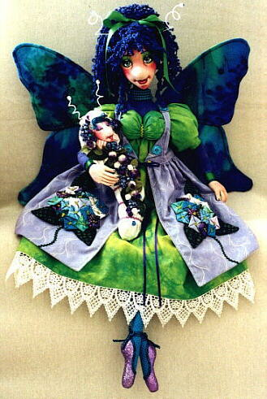
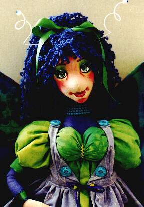
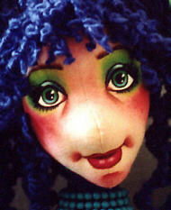

"Hydrangea"

"Hydrangea" is a beautiful 24-inch cloth doll. She has wonderful hair made from textured yarn and fashioned into a becoming ponytail......the perfect style for a "Butterfly Mama". Her overcoat displays fabric origami embellishments which create the flowers that give this butterfly her name......
As with all of the "Butterfly Mama" dolls, Hydrangea rests peacefully, waiting for her Caterpillar Baby to awaken from her nap. And like all devoted Mamas, Hydrangea is happy to sit and patiently wait, for as long as it takes......for she knows that when her little one awakens, it will be because she has grown her own wings and is ready to fly away.
Click here to see other
"Hydrangea" Dolls!

"Hydrangea" pattern
now available!
"Hydrangea" is a very fun-to-make doll, for those with basic sewing skills and a desire to learn basic cloth dollmaking techniques. She can also be made without her bottom weighting, as a lightweight wall-hanging doll.
For those who are looking for more of a dollmaking challenge, she makes a wonderful canvas to show off your favorite embellishment techniques like quilting and piecework, embroidery, beading or even fabric origami. Her overcoat is a perfect background for the fabric origami embellishments which create the flowers that give this "Butterfly Mama" her name. Hydrangea's "Butterfly Mama" sisters like "Peony" and "Bluebell" show off alternate fabric origami flowers.

The detailed workbook pattern for Hydrangea is $15.00, plus $2.00 shipping (within the USA), and is available directly from the artist; email me for more information and postal rates for other countries.
|